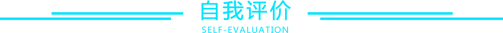

Web前端开发工程师

- 全职
- 北京
- 期望薪资9-15k
- 立即到岗
2013.09-2017.06 西南大学(211工程) 网络工程/本科
-
主修课程:数据结构、网络安全、数据库、操作系统、网络协议分析(可看懂部分
网络协议)、Linux等，可解决简单的计算机软件和硬件问题，会装系统能P图
2013.09-2017.06 计算机类2班 团支书/西南大学优秀团干部
- 按照学院要求协调班委，组织同学举办团日活动，深入贯彻党的思想和章程;
- 组织学术科技活动，聚餐，爬山，联谊等班级活动，协调同学关系，保障班级稳定与发展;
- 协助辅导员高效顺利的完成日常工作，与其他班级班长团支书沟通，更好的管理班级。
2013.09-2014.06 西南大学樟树林论坛办公室干事
- 办公室物资的采购，论坛各部门之间信息的推送;
- 网络推广渠道搭建维护，包括QQ空间、微博、微信等;
-
协助论坛活动的顺利举办，校级校园歌手大赛，线上线下活动的开展，并顺利完成
论坛10周年晚会活动的举办，获得优秀干事称号
-
西南大学计信院
网络工程主修课程:数据结构、网络安全、数据库、操作系统、网络协议分析(可看懂部分
网络协议)、Linux等，可解决简单的计算机软件和硬件问题，会装系统能P图 -
重庆猪八戒网络有限公司
前端开发实习生1.独立完成培训文档中练习题目的实现
2.页面抠图和响应式的开发
3.参与八戒金石和八戒地图的开发，和设计产品沟通，使产品更加完善；与后端人员联调接口。八戒金石在年中总结大会获得最佳业绩贡献项目
1.学习页面基本布局和响应式开发jquery和svn、git等工具的操作
2.养成每天通过笔记记录下自己的所得和收获、并定期回看的习惯
3.利用Hexo和github搭建属于自己的博客,不定时更新
4.学会利用StackOverflow和SegmentDefault解决开发和学习中遇到的问题 -
国美控股集团有限公司
前端开发实习生1.页面抠图和响应式的开发
2.导航栏滚动条的开发
3.web前端相关知识的学习
1.学会了工作中的一丝不苟的态度
2.学会了如何安排自己的时间，如何充分利用时间提高自己的工作效率 -
万达信息股份有限公司
软件开发工程师1.与同事一起完成持卡库后台22个服务的编写工作，独立完成所有服务的测试工作以及bug 的修复和功能的完善
2.学习java web 的相关知识，并实现后台服务的java版本
3.学习运维相关工作，学习并动手操作完成每天的巡检和各省份的运维工作
1.加强了对linux操作系统和数据库系统的操作能力
2.Java和C++知识的熟练度都得到相应的提升
3.对于后端的组件式开发有了更深刻的理解
大事记
程序小白进击之路
- 2014.07.10
- 2014.11.10
- 2015.05.10
- 2016.11.05
- 2016.03.08
- 2016.06.30
- 2017.02.18
- 2017.05.13
- 2017.07.17



- 1.热爱前端，关注前端早读课、奇舞周刊和前端大全等微信公众号和十年踪迹、阮一峰和张鑫旭等前辈博客，了解技术发展情况
- 2.喜欢阅读观影，记录书评影评20余篇，文字摘抄数本
- 3.热爱运动，积极乐观，参与学校运动会、志愿者活动和毕业晚会，业余兼职赚取部分生活费，丰富了自己的大学生活
- 4.始终觉得优秀是相互传染的，希望自己可以成为一个更好的程序媛，作出更好的网站
- 5.工作积极，认真负责，喜欢独立思考并解决问题，有较强的团队精神和抗压能力
- 6.具备一定的英语听说读写能力，大学英语免修，CET4(543分)、CET6考试.阅读《call me by your name》《here art thou》英文原著
- 1st:Loving to be a Web-developer, paying attention to Wechat Official Accounts other excellent senior's blogs to have a basic understanding of the advanced technology
- 2nd:Liking to read and watch movies, recording the feelings and thoughts that have learned from this.
- 3rd:liking sports,participating lots of activities to make money and richful my own lifes
- 4th:Striving for excellence and then you'll be a better man. I hope I'll be a better developer and make a more reliable and speedy websites
- 5th:Positive and responsible,thinking independently to solve the problems I have met.Strong team spirits and can work under perssure
- 6th:Having a certain level of English listening, speaking, reading and writing